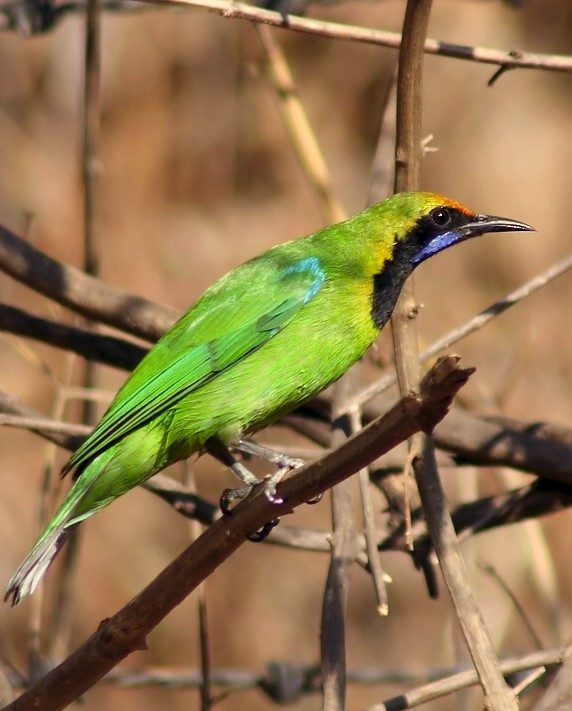

गोल्डन-फ्रंटेड लीफबर्डGolden-fronted Leafbird
Chloropsis aurifrons · Chloropseidae · BRD-0322

- Scientific name वैज्ञानिक नाम
- Chloropsis aurifrons (Temminck, 1829)
- Family कुल
- Chloropseidae
- Hindi हिंदी
- गोल्डन-फ्रंटेड लीफबर्ड
- Local names स्थानीय नाम
- subz-hareiwa, hurriba, golden-fronted leafbird, gold-fronted chloropsis
- Status here यहाँ की स्थिति
- native
- Movement आवागमन
- Resident, here all year
- Known from कहाँ दर्ज
- Others have published records from the wider Awadh–Purvanchal plain, none yet from Basti–Ayodhya अवध–पूर्वांचल से दूसरों के प्रकाशित अभिलेख, बस्ती–अयोध्या से अभी नहीं
- IUCN IUCN
- LC
- Review समीक्षा
- not yet reviewed
When to look कब देखें
Present all year. साल भर मौजूद।
Tell it apart from इनसे अलग पहचानें
गोल्डन-फ्रंटेड लीफबर्ड / Golden-fronted Leafbird
Chloropsis aurifrons (Temminck, 1829) — Chloropseidae
गोल्डन-फ्रंटेड लीफबर्ड — तराई के घने वनों और साल के ऊंचे पेड़ों की छत्रछाया में रहने वाला एक अत्यंत सुंदर, चमकीला हरा पक्षी है। इसका पूरा शरीर पत्तियों जैसा गहरा हरा होता है, जिसके कारण यह घने पत्तों के बीच पूरी तरह छिप जाता है। इसके माथे पर सोने जैसा पीला-नारंगी मुकुट चमकता है, ठुड्डी और गले पर गहरा बैंगनी-नीला धब्बा होता है, और पंखों के कंधे पर चमकीला फिरोजी-नीला निशान होता है। यह पेड़ों पर खिले फूलों का मकरंद चूसता है और अन्य पक्षियों की आवाजों की सटीक नकल करने में माहिर है।
Quick Identification त्वरित पहचान
| Feature | Description |
|---|---|
| Habit | Arboreal, active, foliage-gleaning canopy passerine of deciduous forests |
| Plumage | Brilliant grass-green overall, blending seamlessly with canopy foliage |
| Forehead | Conspicuous bright golden-orange or flame-yellow patch on the fore-crown |
| Throat Patch | Dark purplish-blue patch on chin and upper throat bordered by black |
| Wing Patch | Bright turquoise-blue shoulder patch on the lesser wing-coverts |
| Bill | Slender, slightly downcurved, dark horn-black bill adapted for nectar feeding |
| Mimicry | Extraordinary vocal repertoire imitating drongos, shikras, and bulbuls |
Field tip: Scan flowering Bombax ceiba (Semal) or Butea monosperma (Palash) canopies in the Terai. The brilliant grass-green body, bright golden forehead, and iridescent violet-blue throat patch distinguish it from other arboreal birds.
हिंदी:
यह पत्तियों जैसा हरा पक्षी है जिसके माथे पर सुनहरा-नारंगी निशान होता है।
गले पर बैंगनी-नीला और पंखों के कंधे पर फिरोजी नीला धब्बा चमकता है।
यह सेमल और पलाश के फूलों पर मकरंद पीने आता है और दूसरे पक्षियों की हूबहू आवाज निकालता है।
Morphology आकारिकी
Measurements as given by Baker (1922):
| Measurement | Range |
|---|---|
| Total length and wing | Total length about 190 mm, ; wing 94 to 98 mm. (Baker 1922) |
The Golden-fronted Leafbird is a medium-sized, slender passerine characterized by vibrant, leaf-mimicking plumage. The forehead and fore-crown are adorned with a luminous patch of fiery golden-orange. The lores, orbital area, and a broad band encircling the lower throat are velvety black.
The chin and upper central throat display an intense metallic purplish-blue moustache streak, surrounded below by a broad golden-yellow collar. The lesser wing-coverts feature a gleaming patch of turquoise or sky-blue. The remainder of the upper and lower plumage is a uniform, vivid grass-green, slightly lighter on the belly.
The bill is blackish, slender, and gently decurved, containing a brush-tipped tongue modified for gathering nectar from tubular blossoms. The legs and feet are plumbeous-slate, with strong toes suited for acrobatic clambering among outer twigs.
Vocalisations. A remarkably accomplished vocal mimic, the species routinely incorporates flawless imitations of other woodland species into its melodious whistles, chuckles, and clear bubbling calls.
हिंदी:
इसकी कुल लंबाई लगभग 190 मिमी और पंखों का फैलाव 94 से 98 मिमी होता है।
इसकी घुमावदार पतली चोंच फूलों से रस चूसने के लिए बहुत अनुकूल होती है।
यह जंगल में विभिन्न पक्षियों की आवाज की नकल करके भ्रमित कर देता है।
Behaviour & Ecology व्यवहार और पारिस्थितिकी
Chloropsis aurifrons is strictly arboreal, seldom descending to the lower shrub layer and almost never visiting the forest floor. It moves restlessly through the upper canopy, hanging upside down from slender leafy twigs like a tit to inspect the undersides of foliage for hidden caterpillars and spiders.
During the flowering season of deciduous forest trees, leafbirds gather in small foraging aggregations at nectar sources alongside white-eyes, starlings, and sunbirds. Despite their social feeding at abundant blooms, individuals defend favored flowering branches against smaller nectar competitors with aggressive lunges and buzzing scolding notes.
हिंदी:
यह हमेशा ऊंचे पेड़ों की डालियों पर रहता है और जमीन पर कभी नहीं उतरता।
यह पत्तों के नीचे उल्टा लटककर कीड़े-मकोड़े और इल्लियां तलाशता है।
Life Cycle / Phenology जीवन चक्र
In the foothills and hills of Assam and the Himalayas, breeding extends from mid-May to July or August (Baker 1922, p. 347). The female builds a shallow cup nest composed of fine twigs, moss roots, and tendrils, placed in a horizontal fork near the top of a high tree in forest. A small clutch of eggs is laid and incubated for a few weeks until hatching.
हिंदी:
असम और हिमालय की तलहटी में यह मई के मध्य से जुलाई या अगस्त तक प्रजनन करता है (बेकर 1922)।
मादा ऊंचे पेड़ की शाखा पर महीन टहनियों और जड़ों से एक छोटा कटोरा जैसा घोंसला बनाती है।
Host Plants or Prey आहार
The Golden-fronted Leafbird has an omnivorous diet combining floral nectar, fleshy fruits, and canopy invertebrates:
- Nectar from flowering trees, especially Bombax ceiba (Semal) and Butea monosperma (Palash)
- Canopy insects including caterpillars, winged termites, small beetles, and tree-dwelling spiders
- Small fleshy figs of Ficus benghalensis and Ficus religiosa
- Ripe fruits and berries found in forest canopies
हिंदी:
इसका मुख्य आहार सेमल और पलाश के फूलों का मकरंद, गूलर-बरगद के फल और पत्तों पर मिलने वाली हरी इल्लियां हैं।
Predators / Natural Enemies शत्रु व परभक्षी
Hawks and small carnivores take birds of this size. No source opened for this atlas names a specific predator of this bird.
हिंदी:
बाज़ और छोटे मांसाहारी इस आकार के पक्षियों का शिकार करते हैं। इस एटलस के लिए खोले गए किसी स्रोत में इस पक्षी के किसी विशिष्ट शिकारी का नाम नहीं है।
Agricultural / Human Relevance कृषि व मानव संदर्भ
The Golden-fronted Leafbird feeds on insects, seeds, and fruit, and visits flowering cotton-trees (Bombax) (Baker 1922, p. 348). It is protected under the Wildlife (Protection) Act, 1972.
हिंदी:
गोल्डन-फ्रंटेड लीफबर्ड कीड़े, बीज, फल खाता है और फूलते हुए सेमल के पेड़ों पर जाता है (बेकर 1922)। यह वन्यजीव (संरक्षण) अधिनियम, 1972 के तहत संरक्षित है।
Expected Locally स्थानीय रूप से अपेक्षित
Not a field record. Written from published accounts for eastern Uttar Pradesh. No confirmed local sighting yet — if you have seen it, that is what the atlas needs.
अभी तक स्थानीय पुष्टि नहीं। यह विवरण प्रकाशित स्रोतों से है, किसी अवलोकन से नहीं।
Search along mature sal canopy corridors, flowering semal trees, and riverine forest edges of the Terai.
GBIF holds published records from the wider Awadh–Purvanchal plain, none yet from Basti–Ayodhya.
A first record would be a photograph of the bird with place and date, sent through the About page.
Distribution वितरण
Global and historical range: Resident across the Indian subcontinent and Southeast Asia, from the Himalayan foothills across northern, central, and southwestern India, Sri Lanka, Bangladesh, Myanmar, Thailand, and Indochina.
Regional status: Resident in dense sal and riverine forests of northern Uttar Pradesh, including Dudhwa National Park, Katarniaghat Wildlife Sanctuary, and adjoining foothills.
हिंदी:
यह पूरे भारतीय उपमहाद्वीप और दक्षिण-पूर्व एशिया के सदाबहार और पर्णपाती जंगलों में पाया जाता है।
उत्तर प्रदेश में यह दुधवा और कतरनियाघाट के तराई जंगलों में साल भर देखा जाता है।
Research Questions शोध प्रश्न
- How do seasonal flowering peaks of Bombax ceiba and Butea monosperma influence leafbird movements across Terai forest patches? / तराई में सेमल और पलाश के खिलने से लीफबर्ड के मौसमी आवागमन पर क्या प्रभाव पड़ता है?
- What proportion of the local avian acoustic community does Chloropsis aurifrons incorporate into its vocal mimicry repertoire? / क्या लीफबर्ड अपने गीतों में तराई के अन्य पक्षियों की आवाजों की सटीक नकल करता है?
- How effectively does leafbird visit frequency facilitate cross-pollination compared to sunbirds and white-eyes?
- What is the degree of territorial resource defence exhibited at isolated flowering canopies during early spring?
- How does fragmentation of sal forest canopies affect leafbird nesting success and juvenile dispersal?
Similar Species मिलती-जुलती प्रजातियाँ
| Species | How to tell apart | हिंदी | |
|---|---|---|---|
| [[crimson_sunbird\ | Crimson Sunbird]] (Aethopyga siparaja) | Much smaller nectarivore with crimson mantle, yellow rump, and long decurved bill | क्रिमसन सनबर्ड |
| [[common_iora\ | Common Iora]] (Aegithina tiphia) | Smaller, with two white wing bars and black or olive wings; no orange forehead or black throat | शौबीगा |
Field rule: The completely grass-green plumage, bright golden-orange forehead patch, and turquoise shoulder epaulet distinguish the Golden-fronted Leafbird from all other canopy passerines.
हिंदी:
हरा शरीर, सुनहरा-नारंगी माथा और कंधे पर फिरोजी नीला धब्बा इसकी अचूक पहचान हैं।
Taxonomy & Classification वर्गीकरण
Original description. Described by Coenraad Jacob Temminck in 1829 in Nouveau recueil de planches coloriées d'oiseaux (livr. 81, pl. 484), under the basionym "Phyllornis aurifrons".
Synonyms and historical names. Stuart Baker (1922, p. 346) treated the species under Chloropsis aurifrons, recording the vernacular designations "Subz-hareiwa" in Nepal and "Hurriba" in Bengal.
Subspecies. Multiple subspecies are recognized; northern Indian populations represent the nominate race Chloropsis aurifrons aurifrons (Temminck, 1829).
Family and order placement. Order Passeriformes; family Chloropseidae (leafbirds); genus Chloropsis.
IUCN status rationale. Assessed as Least Concern (LC) on the IUCN Red List due to its extremely vast range and absence of evidence for substantial population declines.
हिंदी:
टेम्मिंक ने 1829 में इसका मूल विवरण दिया था। यह क्लोरोप्सिड्डे (लीफबर्ड) कुल का सदस्य है और संकटमुक्त (LC) है।
Photo Gallery फोटो गैलरी
No photos yet — add field photos to media/species/golden_fronted_leafbird/ and run node scripts/sync_photos.js.
Photos needed आवश्यक फोटो
- [ ] Adult feeding on red Semal blossom (सेमल के फूल पर मकरंद चूसता पक्षी)
- [ ] Forager showing golden forehead and turquoise wing patch (सुनहरा माथा दिखाता पक्षी)
References संदर्भ
- Temminck, C. J. (1829). Nouveau recueil de planches coloriées d'oiseaux, livr. 81, pl. 484 (as "Phyllornis aurifrons").
- Baker, E. C. S. (1922). The Fauna of British India, Including Ceylon and Burma. Birds. Vol. 1. Taylor & Francis, London, p. 346 (as Chloropsis aurifrons).
- Ali, S. & Ripley, S. D. (1987). Compact Handbook of the Birds of India and Pakistan. Oxford University Press, New Delhi.
- BirdLife International (2018). Chloropsis aurifrons. The IUCN Red List of Threatened Species 2018: e.T22704947A130380842.
- Wildlife (Protection) Act, 1972 (as amended in 2022). Government of India, Schedule II.
- GBIF Occurrence Data — Chloropsis aurifrons (Temminck, 1829), India (2025).
Source file: species/fauna/birds/golden_fronted_leafbird.md